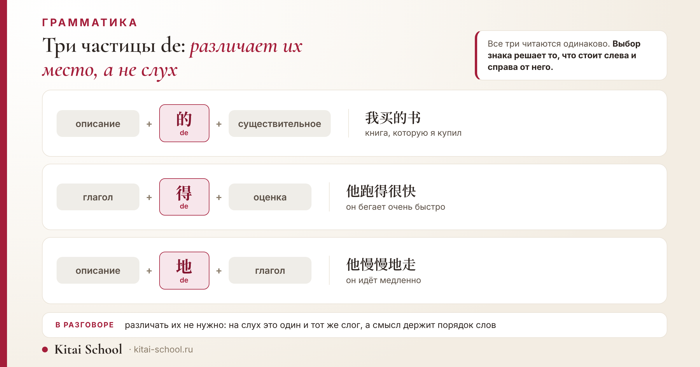
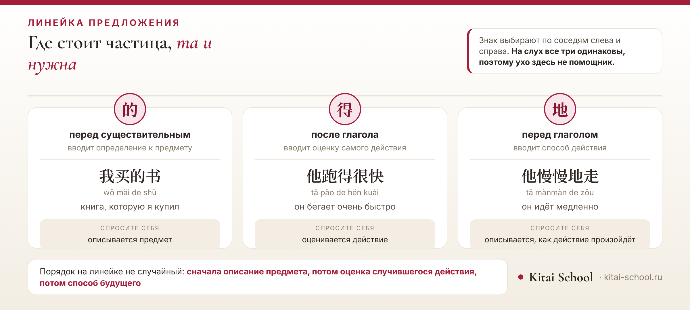

Грамматика
Частица de в китайском языке: 的 для принадлежности и определений, а также 得 и 地


Частицу 的 встречают на первом же занятии, в слове 我的. Выглядит она безобидно, работает часто, а потом выясняется, что таких de в языке три: 的, 得 и 地. Звучат одинаково, пишутся по-разному, и в тексте перепутать их легко.
Хорошая новость в том, что различает их не значение и не память, а место в предложении. Разберём сначала саму 的 и все её работы, потом двух её тёзок, а заодно посмотрим, где частицу не ставят вовсе.
Короткий ответ: что делает 的
У 的 три работы, и все три вы встретите в первый же месяц.
- Принадлежность. 我的书 (wǒ de shū) — «моя книга». Частица стоит между владельцем и предметом.
- Определение. 我买的书 (wǒ mǎi de shū) — «книга, которую я купил». Частица присоединяет описание к существительному.
- Замена существительного. 我的 значит просто «моё», 红的 — «красное»: сам предмет не называют, он и так ясен из разговора.
А ещё есть два знака с тем же чтением: 得 идёт после глагола и вводит оценку действия, 地 идёт перед глаголом и говорит, как действие происходит. Всё различие — в позиции, и дальше мы её разложим.
Порядок слов в самой именной группе — отдельная большая тема, и ей у нас посвящена статья про порядок определений в китайском. Здесь я беру только частицу.
Принадлежность: 我的书 и когда частица исчезает
Самое первое, зачем нужна 的, — сказать, чьё это. Схема простая: сначала владелец, потом частица, потом предмет.
我的书 (wǒ de shū) — «моя книга». 老师的车 (lǎoshī de chē) — «машина преподавателя». 朋友的名字 (péngyou de míngzi) — «имя друга». Порядок всегда такой, и он не меняется: в китайском нет падежей, которые могли бы взять эту работу на себя, и место слова значит всё.
Притяжательных местоимений как отдельных слов в языке тоже нет. «Мой» — это буквально «я + частица», 我的. «Твой» — 你的, «его» и «её» — 他的 и 她的. Сами местоимения и их формы разобраны в статье про местоимения в китайском языке.
Теперь про исключения. Частица исчезает там, где два слова и так воспринимаются как одно целое. Таких случаев немного, и они запоминаются сразу.
| Случай | Как пишут | Пиньинь | Перевод |
|---|---|---|---|
| родня | 我妈妈 | wǒ māma | моя мама |
| своё близкое | 我家 | wǒ jiā | мой дом |
| односложное качество | 新书 | xīn shū | новая книга |
С роднёй это особенно заметно: 我妈妈, 我爸爸, 我哥哥. Вариант с частицей не ошибка, но звучит отстранённее. Так же ведут себя слова о своём близком: 我家 — «мой дом», 我们学校 — «наша школа».
的 вместо существительного: 我的, 红的, 新的
Третья работа частицы удивляет сильнее всего: 的 умеет стоять вообще без существительного. Предмет не называют, потому что собеседник его и так держит в голове.
Вопрос: 这是谁的书? (zhè shì shéi de shū) — «чья это книга?». Ответ: 我的 — «моя». Слово «книга» повторять не нужно, оно уже прозвучало.
Так же работает и с качествами. В магазине на вопрос, какую сумку вы берёте, отвечают 红的 — «красную», 大的 — «большую», 便宜的 — «подешевле». Названия предмета в ответе нет, и он не нужен.
Это сильно разгружает речь: там, где по-русски приходится повторять слово или подставлять «эта» и «такая», в китайском хватает качества и частицы. Начинающие договаривают существительное до конца — ошибки нет, но звучит тяжеловеснее.
Есть и обратная сторона: в быстрой речи такие ответы ловятся плохо, потому что уха ждёт существительное, а его не произносят. Это вопрос привычки, и она приходит за несколько недель слушания.
Три de: один звук, три знака
Теперь к главной путанице. В китайском есть три служебных знака, которые в нейтральной позиции читаются одинаково — de. На письме они разные, и каждый занимает своё место.

| Знак | Место | Что вводит | Пример |
|---|---|---|---|
| 的 | перед существительным | определение к предмету | 我买的书 wǒ mǎi de shū книга, которую я купил |
| 得 | после глагола | оценку самого действия | 他跑得很快 tā pǎo de hěn kuài он бегает очень быстро |
| 地 | перед глаголом | способ действия | 他慢慢地走 tā mànmàn de zǒu он идёт медленно |
Смотреть надо не на знак, а на то, что стоит вокруг. Слева описание, справа предмет — 的. Слева глагол, справа оценка — 得. Слева описание, справа глагол — 地.
В разговоре эти три знака не различают вовсе, и различать не нужно: звучат они одинаково, а смысл держится на порядке слов, который прекрасно слышно. Вся разница живёт на письме.
得 после глагола: оценка самого действия
得 ставят сразу после глагола, и дальше идёт то, как это действие прошло.
他跑得很快 (tā pǎo de hěn kuài) — «он бегает очень быстро». 她说得很好 (tā shuō de hěn hǎo) — «она говорит очень хорошо». 你写得太小了 (nǐ xiě de tài xiǎo le) — «ты пишешь слишком мелко».
Обратите внимание на порядок: сначала действие, потом оценка. По-русски мы говорим наоборот — «быстро бегает», наречие впереди. Отсюда и самая частая ошибка: русскоязычные ставят оценку перед глаголом и получают фразу, которую носитель поймёт, но поправит.
После 得 почти всегда стоит 很 или другое слово степени. Голое 他跑得快 тоже встречается, но звучит так, будто вы сравниваете его с кем-то и фраза оборвалась. Поэтому в учебной речи надёжнее 很快. Про сами слова степени и их место у нас есть статья про наречия в китайском.
Один вопрос вместо трёх правил
Ученица второй месяц писала 他跑的很快 вместо 他跑得很快 и каждый раз удивлялась правке. Упрёк её был справедливый: на слух оба варианта одинаковые, а в учебнике про это сказано одной строкой.
Мы перестали учить правило и стали задавать один вопрос: к чему относится то, что идёт дальше. Если дальше назван предмет — ставим 的. Если дальше оценивают само действие, которое уже случилось, — 得. Если дальше описывают, как действие будет происходить, и сам глагол ещё впереди — 地.
Вопрос этот не про знаки, а про то, что человек хочет сказать. Поэтому он работает и там, где правило не вспоминается: ученица перестала выбирать знак наугад и начала сначала понимать фразу, а потом записывать.
Через неделю диктантов ошибка ушла, и больше не возвращалась — ни в домашних работах, ни на пробном тесте.
Отдельно скажу про слух: различить эти три знака на слух нельзя, и это нормально. В разговоре их и не различают — там всё решает порядок слов, который слышно прекрасно. Знаки нужны на письме, и выбирают их глазами, а не ушами.
Вывод, который я делаю: три de разводит не память и не таблица, а один вопрос, заданный до того, как рука выбрала знак.
地 перед глаголом: способ действия
Третий знак, 地, стоит перед глаголом и говорит, каким образом действие произойдёт.
他慢慢地走 (tā mànmàn de zǒu) — «он идёт медленно». 她高兴地说 (tā gāoxìng de shuō) — «она сказала радостно». 认真地学习 (rènzhēn de xuéxí) — «заниматься старательно».
Разница с 得 на первый взгляд тонкая, а на деле простая. 得 оценивает результат: действие случилось, и мы говорим, как оно вышло. 地 описывает манеру: мы ещё только подходим к глаголу и сразу говорим, как именно он будет выполнен.
Сравните две фразы. 他走得很慢 — «он идёт медленно», мы оцениваем его ходьбу. 他慢慢地走 — «он идёт не спеша», мы описываем манеру. По-русски обе переводятся почти одинаково, и в этом вся сложность: выбирать знак приходится не по переводу, а по тому, что вы хотите сказать.
Практическая подсказка: перед 地 обычно стоит удвоенное слово вроде 慢慢 или двусложное качество — 认真, 高兴.
Честно о письме. В сети и в быстрой переписке 地 иногда заменяют на 的 — просто потому, что первый вариант предлагает клавиатура. Насколько это частое явление, я измерять не берусь и процентов не приведу. В учебных работах и в экзамене так писать нельзя, а при чтении стоит иметь в виду, что встретиться может.
得 в других чтениях: děi и dé
У знака 得 есть и другие чтения — это отдельная ловушка словаря.
| Знак | Чтение | Значение | Пример |
|---|---|---|---|
| 得 | děi | нужно, приходится | 我得走了 |
| 得 | dé | получать | 得到 |
Служебная частица — это нейтральное de без тона. Когда тот же знак читается děi, он значит «нужно, приходится»: 我得走了 — «мне пора идти». Чтение dé — это уже полноценный глагол «получать». Определять нужное чтение приходится по месту во фразе, и здесь работает то же правило: частица стоит сразу после глагола, а не сама по себе.
Определения перед словом: коротко и со ссылкой
Самая объёмная работа 的 — присоединять к существительному целое описание. Схема та же, что с принадлежностью: сначала описание, потом частица, потом предмет.
我买的书 — «книга, которую я купил». 昨天来的人 — «человек, который приходил вчера». 很好的朋友 — «очень хороший друг». По-русски здесь нужно придаточное предложение, в китайском хватает одного блока перед словом.
Главное, что стоит запомнить сразу: описание всегда идёт перед предметом, каким бы длинным оно ни было. Русская привычка договаривать описание после слова здесь не работает совсем.
Дальше начинаются подробности: сколько описаний можно поставить подряд, в каком порядке они выстраиваются и где частицу между ними убирают. Это отдельная тема, и она подробно разобрана в статье про порядок определений в китайском — пересказывать её здесь не буду, чтобы не множить половинчатые объяснения.
Если вы только собираете первые фразы, посмотрите как составлять предложения на китайском: частица встаёт на место легче, когда виден общий каркас.
Конструкция 是…的: обстоятельство важнее факта
Отдельно стоит разобрать конструкцию, где 的 работает в паре с 是. Она выделяет не сам факт, а его обстоятельство.
我是昨天来的 (wǒ shì zuótiān lái de) — «я приехал именно вчера». Собеседник уже знает, что вы приехали; новое здесь — когда. Так же выделяют место: 我是在北京学的 — «я учил это именно в Пекине». И способ: 我是坐飞机来的 — «я прилетел именно самолётом».
Если убрать 是 и 的, фраза останется грамотной, но потеряет ударение. 我昨天来 — просто «я приехал вчера», без нажима на дату. Разница примерно как между «я приехал вчера» и «я приехал именно вчера».
Похожим образом эта конструкция иногда подменяет пассив, когда важнее обстоятельство, а не действующее лицо. Сам пассив и знак 被 разобраны в статье про пассивный залог в китайском.
Где 的 не ставят
Мы уже видели родню и односложные качества. Соберу все случаи в одном месте, потому что именно лишняя частица выдаёт начинающего быстрее всего.
- Родня и своё близкое: 我妈妈, 我家, 我们学校.
- Односложное качество: 新书 «новая книга», 好人 «хороший человек», 红花 «красный цветок».
- Материал и вид: 木头桌子 «деревянный стол», 中国人 «китаец».
- Устойчивые сочетания и названия: там, где два слова давно слиплись в одно понятие, частице места нет.
А вот со словом степени частица возвращается: 很好的人 — «очень хороший человек». Пара 好人 и 很好的人 стоит того, чтобы выучить её целиком: она показывает правило лучше любого объяснения.
Общий принцип: чем теснее связаны два слова, тем меньше нужна частица. Связь очевидна — опускают, связь надо показать — ставят.
Частые ошибки
- Оценка перед глаголом. Пишут 他很快跑 вместо 他跑得很快. Русский порядок слов переносится напрямую, и фраза ломается.
- Лишняя частица с роднёй. 我的妈妈 не ошибка, но в обычном разговоре так почти не говорят. Для учебной работы лучше 我妈妈.
- Пропуск частицы после 很. 很好人 — так нельзя. Нужно 很好的人.
- 的 вместо 得 на письме. Самая частая опечатка и самая заметная: в проверочной работе её считают ошибкой, а не описком.
- Описание после слова. Фразу «книга, которую я купил» собирают по-русски, ставя описание в конец. В китайском описание всегда впереди.
Чего в статье нет намеренно
- Порядка нескольких определений подряд — это тема статьи про порядок определений в китайском, и там она разобрана по позициям.
- Системы местоимений с формами множественного числа и вежливым обращением — у нас есть местоимения в китайском языке.
- Пассивного залога и знака 被 — это пассивный залог в китайском.
- Цифр частотности. Утверждения вроде «的 составляет столько-то процентов текста» встречаются, но подсчётов, которым я готова доверять, не нашла.
- Истории знаков. Происхождение этих трёх иероглифов я не разбираю: проверяемых данных у меня нет, а пересказывать красивые версии не хочу.
Хотите разобрать это на своих фразах? На занятиях мы берём ваши собственные предложения и разводим три de по местам — обычно на это уходит одно занятие и неделя практики.
Записаться на пробное занятие или посмотреть онлайн-курсы китайского.
Частые вопросы (FAQ)
Что означает частица 的 в китайском языке?
У неё три работы. Она связывает определение с существительным: 我买的书 — «книга, которую я купил». Она образует принадлежность: 我的书 — «моя книга». И она встаёт на место самого предмета: 我的 значит «моё», а название вещи при этом опускают. Во всех трёх случаях читается одинаково, нейтральным тоном.
Чем отличаются 的, 得 и 地?
Местом в предложении. 的 стоит перед существительным и вводит описание предмета. 得 стоит после глагола и вводит оценку действия: 他跑得很快 — «он бегает очень быстро». 地 стоит перед глаголом и описывает способ действия: 他慢慢地走 — «он идёт медленно». Звучат все три одинаково, поэтому на слух их не различают — только по месту.
Когда 的 можно не ставить?
С роднёй и со своим близким: 我妈妈 — «моя мама», 我家 — «мой дом». А ещё с односложным качеством: 新书 — «новая книга». Общее правило простое: если два слова и так воспринимаются как одно целое, частица между ними лишняя.
Как сказать «мой» по-китайски?
Берём местоимение и добавляем 的: 我的 — «мой», 你的 — «твой», 他的 — «его». С предметами это работает всегда: 我的书 — «моя книга». А вот с роднёй и домом частицу обычно убирают, и выходит 我妈妈, 我家. Разбор самих местоимений у нас в отдельной статье.
Что значит 得 после глагола?
Это знак того, что дальше будет оценка действия, а не нового предмета. 说得很好 — «говорит хорошо», 跑得快 — «бегает быстро». Оценивают здесь именно то, как прошло действие, поэтому речь всегда о чём-то уже случившемся или о привычном.
Зачем нужна конструкция 是…的?
Она подчёркивает не сам факт, а его обстоятельство. 我是昨天来的 — «я приехал именно вчера»: о том, что приехал, собеседник уже знает, и важна дата. Так же выделяют место и способ. Если убрать 是 и 的, фраза останется верной, но ударение из неё уйдёт.
Источники
- Роли частицы 的, позиции 得 и 地 и конструкция 是…的 даются по базовому описанию грамматики путунхуа; все примеры простые и проверяются по любому учебному курсу начального уровня.
- Чтения děi и dé приведены по словарным значениям знака 得.
- О смешении 地 и 的 в неформальном письме говорю как о наблюдении: частотных подсчётов не привожу, потому что надёжных измерений не нашла.
- Процентов употребительности частицы не называю по той же причине.
- Происхождение знаков не объясняю: версии встречаются, подтверждений им у меня нет.
- Порядок определений, система местоимений и пассивный залог вынесены в отдельные материалы блога, ссылки расставлены по тексту.
- История с диктантами взята из практики Kitai School; имени ученицы не привожу.